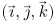
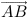
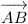
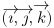
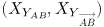
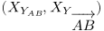

This short article (being far from complete) is about Math and arrows used for vectors, as in
.
If anyone feels like writing a more extensive article about math arrows in general, you're wellcome to do so.
Contents
Vectors with arrows
\vec,
-
The simplest way to write vectors is to use \vec:
-
$(\vec{\imath}, \vec{\jmath}, \vec{k})$
- 
However, that solution is not applicable when one needs to use longer arrows, as in:
-
$\vec{AB}$
- 
\overrightarrow,
-
For such cases, the plain format provides another command, \overrightarrow:
-
$\overrightarrow{AB}$
- 
Hovever, again, that command seems to be unsuitable for short letters:
-
$(\overrightarrow{\imath}, \overrightarrow{\jmath}, \overrightarrow{k})$
- 
which means that one would need to combine both commands at best.
Another nasty property of \overrightarrow is that it doesn't scale down (textstyle, scriptstyle, ...):
-
$(X_{Y_{AB}}, X_{Y_{\overrightarrow{AB}}})$
- 
Wait a minute ... has it really been fixed in ConTeXt when compared to plain TeX ??? That's not fair! I cannot demonstrate the problem now! -- Mojca (crying)
Anyway, here's how it looks like in plain TeX:
- 
Vectors with harpoons
In some countries vectors are written with harpoons as opposed to arrows. Plain TeX has no support for that, add to that the fact that fonts have no suitable glyphs.
| TODO: clean the code (some might be in the core already), describe Aditya's macros (See: To-Do List) |
\overrightharpoonup,
-

| TODO: compare sizes of different arrows (See: To-Do List) |
Antykwa Toruńska
| TODO: Jacko and Janusz have added some extra glyphs - explore, describe the problem & solution and draw (See: To-Do List) |
\mathchardef\minusleft="32C9 \mathchardef\minusright="32CA \mathchardef\minusc="32C8
See also
This is a My Way about a related topic:
- Extensible Arrows in ConTeXt by Aditya Mahajan